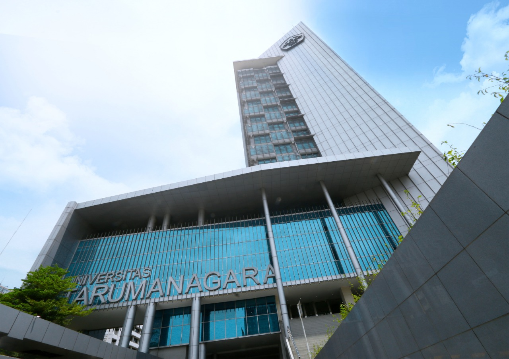

Profil Kampus

Universitas Tarumanagara (UNTAR) adalah salah satu universitas swasta tertua dan terbesar di Indonesia, berlokasi di Jakarta Barat, dengan akreditasi “Unggul” dari BAN-PT dan reputasi kuat sebagai kampus berorientasi kewirausahaan. UNTAR dikenal dengan nilai Integritas, Profesionalisme, dan Entrepreneurship (IPE), serta memiliki lebih dari 100.000 alumni yang tersebar di berbagai bidang